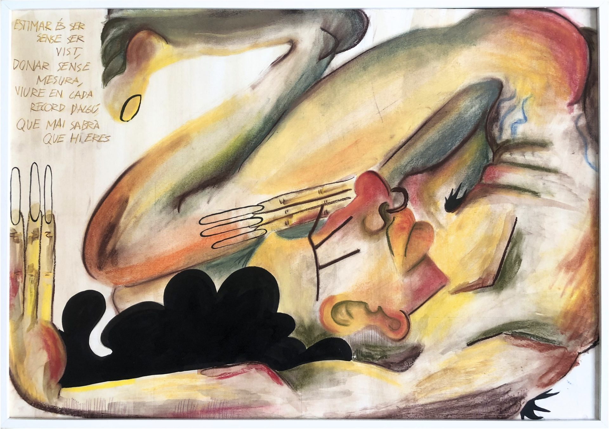

Com estimo?
Com estimo? parteix de la lectura de Carta d’una desconeguda, de Stefan
Zweig, i de la manera obsessiva amb què la protagonista viu l’amor. La
facilitat per comprendre els seus sentiments contrasta amb la dificultat
que tinc per entendre els meus, fet que em porta a replantejar la
pregunta inicial, com puc entendre la meva manera d’estimar els altres
si no sé com m’estimo a mi mateixa? A partir d’aquesta contradicció,
creo una pintura de tècnica mixta acompanyada d’un poema propi, on
exploro la manera com reprimeixo i amago allò
que sento.

Com estimo? 2024.
Pintura de tècniques mixtes
(pastels, aquarel·les i tinta xina).
59,4 x 84 cm.